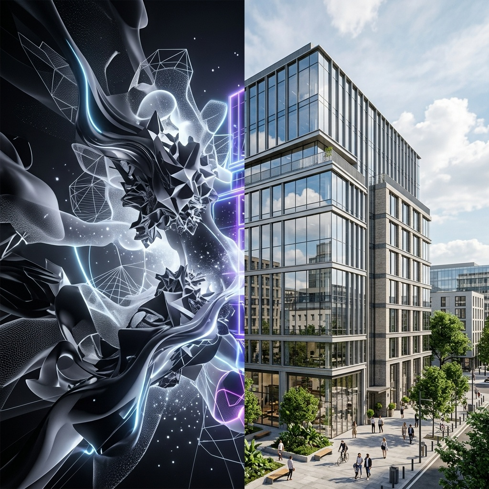

An AI rendering roundup that lists Veras, Rendair AI, ArchSynth, V-Ray, Corona, and KeyShot side by side is making a category mistake. Two of those products are AI-native renderers, where the entire image is generated by a diffusion model conditioned on your geometry. Three of those products are path tracers that have shipped AI features as adjuncts to a deterministic engine. The output looks superficially similar in a thumbnail. The pipeline it lives in is completely different. The failure modes are different. The pricing is different. The kind of practice each one belongs in is different. And in 2026, the practitioners who understand the split are quietly out-shipping the practitioners who do not.
We took the same residential project, a 4,200-square-foot single-family house with a difficult corner glazing condition and a hand-rendered exterior brief, and we ran it through both pipelines back to back. We logged hours, intervention points, client review notes, and what each pipeline actually cost when you priced in the seat fees and the time. What follows is the honest version of what we found.
What “AI-native” actually means
An AI-native renderer takes geometry, depth maps, and prompts, and produces an image through a diffusion model. There is no path tracer underneath. There is no light simulation in the physical sense. The image is the model's best guess at what your scene looks like, conditioned on the geometry you supplied and the language you wrote. Veras, Rendair AI, ArchSynth, mnml.ai, and ArchiVinci all sit in this category. So does the new generation of Nano Banana 2-powered workflows that the Chaos blog now confirms are inside Veras itself.
The strengths of AI-native are obvious to anyone who has tried one. The rendering is fast. The aesthetic is plausible. The conceptual phase becomes a conversation with the model. The weaknesses are also obvious to anyone who has shipped a final image from one. Geometry drifts. Materials are interpreted, not specified. Reflections, cast shadows, and glazing conditions are approximated. The model invents details the architect did not draw. None of these are fatal. They are interventions the architect now owns.
What “traditional renderer with AI plugin” actually means
A traditional renderer is a path tracer. V-Ray, Corona, KeyShot, and Chaos Vantage all simulate light bouncing off geometry with materials you authored. The AI features layered on top, things like Veras inside SketchUp, V-Ray's AI denoiser, Corona's AI denoiser and AI upscaling, and the newer style-transfer features inside Chaos products, are not the engine. They sit at the front of the pipeline (concept generation), the back (denoising and upscaling), or as a parallel rendering option for early-stage work.
The strengths are the strengths the path tracer always had. Geometry is exact. Materials are physically based. Reflections are real reflections, not approximated. The downside is the entire downside of path tracing: longer render times, more setup, and a higher floor for the skill to produce decent output. The AI plugins shave hours off particular steps. They do not replace the engine.
The same project through both pipelines
Pipeline A. AI-native, Veras + Nano Banana 2
Concept renders in minutes. Hero exterior shots in an afternoon. Final-quality interior shots required two rounds of Photoshop to fix the glazing reflections and the hand-railing detail. Eight hours total for four final-quality images.
The conceptual exterior renders were the easiest deliverable of the entire week. Camera setup in SketchUp, prompt, generate, refine, accept. The Nano Banana 2 backend handled the materials more convincingly than the prior Veras release, and the multi-frame consistency feature finally made the courtyard sequence usable without intervention. The hard part was the corner glazing. The model wanted to interpret a reflection that did not exist, and it took two rounds of in-Photoshop reflection touchup to make the final image accurate to the project. The total elapsed time, including the touchups, was eight hours.
Pipeline B. V-Ray for SketchUp with AI plugins
Concept passes through Veras for client approval. Final renders through V-Ray with the AI denoiser. Material library handled the corner glazing without any post-work. Total elapsed time for four final-quality images: 22 hours including overnight render.
The path-tracer pipeline took roughly three times as long but produced an image that did not require any reflection cleanup. The corner glazing rendered correctly the first time, because we authored the glass material and the engine simulated the reflection. The AI denoiser saved roughly four hours of render time across the four shots, which used to be the most painful step of the V-Ray pipeline. The catch is the upfront setup: you still need a real material library, real lighting, and a real camera setup. The AI plugins did not change any of that. They just made the slowest part of the engine roughly twice as fast.
The grading table
| Dimension | AI-native (Veras) | Traditional + AI (V-Ray) |
|---|---|---|
| Time to first concept image | Minutes | 2-3 hours |
| Time to final-quality hero shot | 2 hours | 5-6 hours |
| Geometry fidelity | Approximate | Exact |
| Material accuracy | Interpreted | Authored |
| Glazing & reflection accuracy | Touchup required | Native |
| Setup investment | Low | High (material library) |
| Animation & video | Multi-frame, improving | Path-traced video |
| Cost per seat per month | $20-50 | $80-120 |
The category split, and which side your practice is on
The roundup posts are not wrong because the tools do not exist. They are wrong because they imply a choice between products that are not competing for the same job. Veras is not trying to replace V-Ray. V-Ray is not trying to replace Veras. They are designed for different parts of the project arc, and the practices that treat them as substitutes are picking the wrong tool for the wrong moment.
The honest 2026 split looks like this. AI-native renderers are the right tool for the conceptual half of the project. Schematic and design development, client presentation, internal review, anything where the question is “does this feel right.” Traditional renderers with AI plugins are the right tool for the final half. Construction document graphics, final marketing imagery, anything where the question is “is this accurate.”
The practices that are out-shipping their peers in 2026 are running both. Not one or the other. The conceptual workflow lives in an AI-native pipeline. The final delivery lives in a path-traced pipeline with AI denoising and AI upscaling on top. The architect moves the project from one pipeline to the other at the moment the geometry is locked.
The 2026 question is not AI-native or traditional. It is which pipeline is the right pipeline for the deliverable in front of you this afternoon, and the answer is rarely the same one twice in a week.
Where each pipeline breaks
AI-native breaks on accuracy. When the client zooms in on a corner detail and asks why the reflection is wrong, or when the construction team asks why the railing has six balusters in the render and twelve in the drawing, the model invented something the architect now has to explain. The fix is to never use an AI-native render as the source of truth for anything dimensional. Use it for feeling and for permission. Use a path-traced render for proof.
Traditional plus AI breaks on speed. The path tracer is still a path tracer. The AI denoiser is fast but does not eliminate render time. A practice that tries to do conceptual exploration inside V-Ray will spend its week setting up scenes that never make the final cut. The fix is to never use a path-traced render for the conceptual phase. The cost of the iteration loop is too high.
Both pipelines break on operator skill. The AI-native pipeline rewards practitioners who know how to art-direct a model. The path-traced pipeline rewards practitioners who know how to author a material library. Neither pipeline is a shortcut around the underlying skill. The marketing implies otherwise. The deliverables disagree.
Our take, which side of the split your studio should be on
If your work is heavily concept-driven, if you are a residential practice spending most of your week in schematic design, or if the volume of client review sessions is high, the AI-native side of the split is the right primary investment. Veras with the new Nano Banana 2 backend is the most defensible choice. Rendair AI and ArchSynth are credible alternatives. Budget for Photoshop time on every final image.
If your work is heavily delivery-driven, if you are a commercial or institutional practice producing marketing imagery for clients who care about photorealism, or if your render is going into a printed brochure, the traditional plus AI side is the right primary investment. V-Ray for SketchUp or 3ds Max with the AI denoiser is the most defensible choice. KeyShot for product-adjacent architecture work. Corona for high-end interiors. The AI features are not the engine. They are the speed-up at the end of the engine.
The third answer, and the answer most 2026 practices are converging on, is to run both pipelines side by side. Concept in Veras. Final in V-Ray. The handoff happens at the moment the geometry is locked. Two subscriptions, two pipelines, one project. The roundup posts will keep treating them as substitutes. The studios shipping the work know they are not.
Test the split this week. Take one current project and run the same view through whichever AI-native tool you already have access to and whichever path tracer you already have access to. The deltas are the conversation. The deltas are also where you will figure out which side of the split your studio actually belongs on, and which pipeline you should be hiring against this year.
Tested by Vista Studios on a 4,200-square-foot single-family residential project with a corner glazing condition. Same SketchUp model through Veras 4.3 and V-Ray for SketchUp with AI denoising. No affiliate relationships.